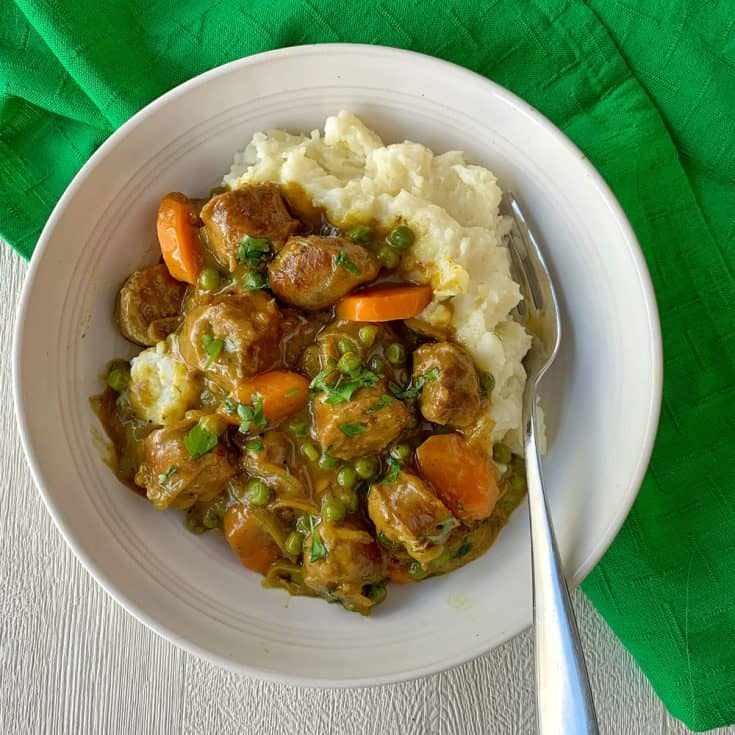

Back to main page
Curried Sausages Recipe

Description
This dish consists of beef sausages simmered down with onions and peas in a mouthwatering gravy made from curry powder and beef stock.
Information
Prep: 10 mins
Cook: 30 mins
Total: 40 mins
Servings: 2
Yield: 2 servings
Ingredients
- Vegetable oil
- 4 Sausages
- Curry Powder
- 1 Onion
- 3 Garlic cloves
- 1 Carrot
- 1 Potato
- 1 cup stock
- 1 tbps Cornflour
Steps
- Chop up sausages & vegetables into mouth size pieces
- Heat the oil in a large frypan over medium-high heat. Add the sausages and fry until browned, turning often to cook through evenly (around 10 minutes).
- In the same frypan you used to cook the sausages, add the onion over medium heat and cook until translucent. Then add the curry powder, beef stock, potato, carrot and return the sausages to the pan. Bring to the boil then reduce to a simmer.
- Mix the cornstarch with 2 tbsp cold water in a small dish. Pour into the pan with the curried sausages and gently mix through. Continue cooking for another 5 minutes until the sauce has thickened nicely.
- Season with salt and pepper. Serve over mashed potato, cooked rice, pasta or noodles!
Return to top